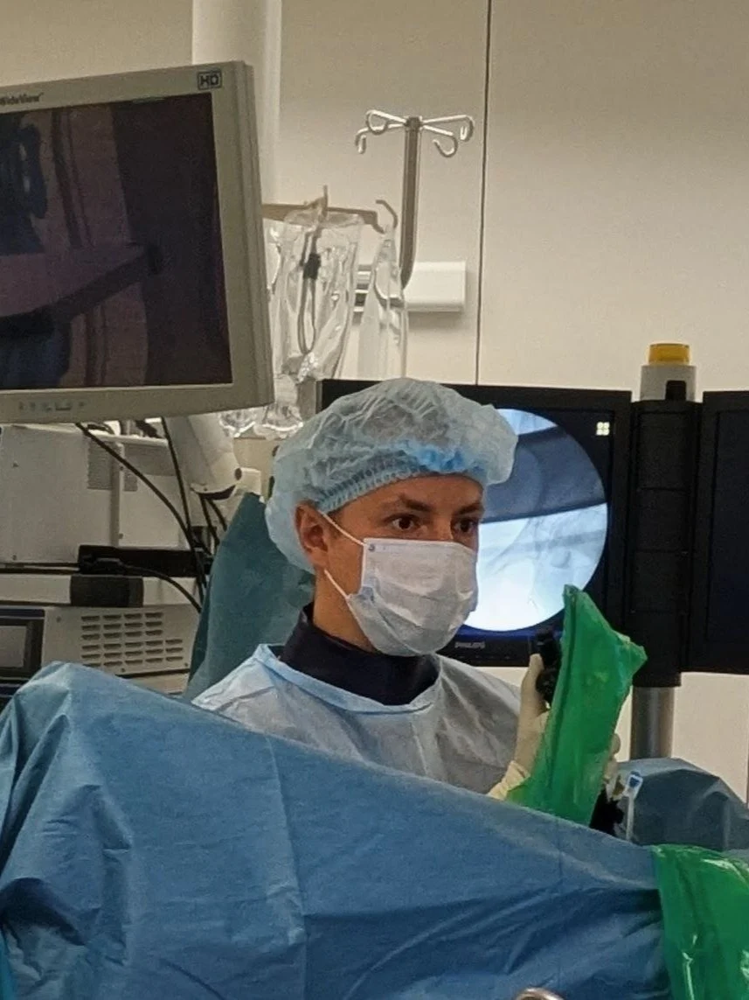
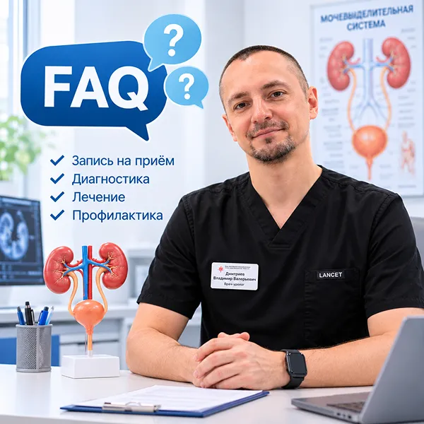
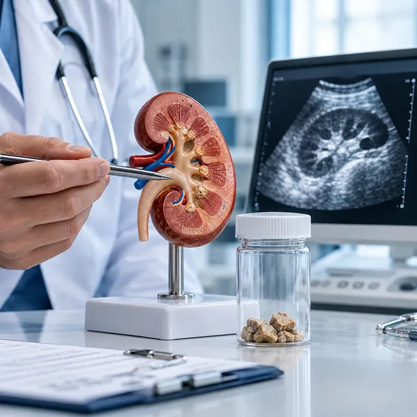
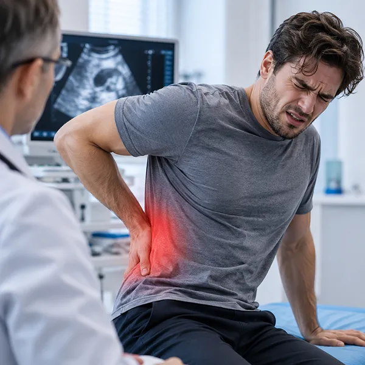
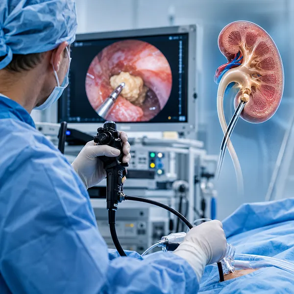

Доказательная медицина
Строю свою работу на основе клинических рекомендаций Российской, Европейской и Американской ассоциаций урологов.
Диагностика и лечение камней почек и мочеточников в условиях современного многопрофильного медицинского ФГБУ ВЦЭРМ им. А. М. Никифорова МЧС России.

Строю свою работу на основе клинических рекомендаций Российской, Европейской и Американской ассоциаций урологов.
Благодаря отличной оснащённости операционной, выбор метода лечения зависит не от наличия того или иного инструмента, а от конкретных показаний к той или иной операции.
При возникновении осложнений в ходе операции или в раннем послеоперационном периоде, благодаря лечению в многопрофильном стационаре, Вы можете своевременно получить помощь сторонних специалистов.
В клинике есть возможность проведения полного обследования, позволяющего выявить причину камнеобразования и снизить или полностью исключить рецидивы камнеобразования.
Высшее медицинское образование, ординатура по урологии и регулярное повышение квалификации. Дипломы, сертификаты и свидетельства, подтверждающие право на медицинскую деятельность и владение современными эндоскопическими методиками.
Эндоскопические операции при камнях почек, мочеточников и мочевого пузыря.
Выбор метода лечения осуществляется совместно с Вами на очной консультации или дистанционной беседе. Возможно получение медицинской помощи по полису ОМС.
Не откладывайте визит — ранняя диагностика существенно упрощает лечение и сокращает его срок.
Аденома предстательной железы, хронический простатит, гиперактивный мочевой пузырь, инфекции мочевыводящих путей. Реже — сахарный диабет или неврологические нарушения.
Мочекаменная болезнь, инфекции, доброкачественная гиперплазия простаты, опухоли почки или мочевого пузыря, травмы. Даже однократный эпизод требует обследования.
PCNL для крупных камней более 1.5 см, RIRS для камней до 1.5 см, URS для камней мочеточников. Тип хирургического лечения определяется на очной консультации.
PCNL — от 139 000 ₽, RIRS — от 216 000 ₽, URS — от 102 000 ₽. Цена указана за лечение под ключ.
Да, возможно получение медицинской помощи по полису ОМС. Запись по телефону 8 (812) 648-24-08 (пн–вс, 9:00–19:00).
Запись на дистанционную беседу осуществляется через портал. Официальное заключение с печатью не выдаётся. Электронная почта: dmitriev.uro@yandex.ru.

Разбор клинических случаев, современных методов диагностики и профилактики мочекаменной болезни — от врача-уролога.

По данным клинических рекомендаций РФ, заболеваемость уролитиазом колеблется от 1 до 20%, а рецидивирование отмечается в 30–50% в течение 5–10 лет. Разбираем, какие симптомы нельзя игнорировать и почему не стоит ждать «пока само выйдет».
Читать полностью
Боль в пояснице, отдающая в пах, тошнота, невозможность найти положение — типичная картина почечной колики. Рассказываю, что делать до приезда врача и почему нельзя «терпеть до утра».
Читать полностью
URS, RIRS и PCNL — три методики, которые позволяют удалить камень через естественные пути или прокол около 1 см. Разбираю, в каких случаях какой метод выбирается, на основе рекомендаций EAU и AUA.
Читать полностьюОставьте заявку и в ближайшее возможное время с Вами свяжутся.